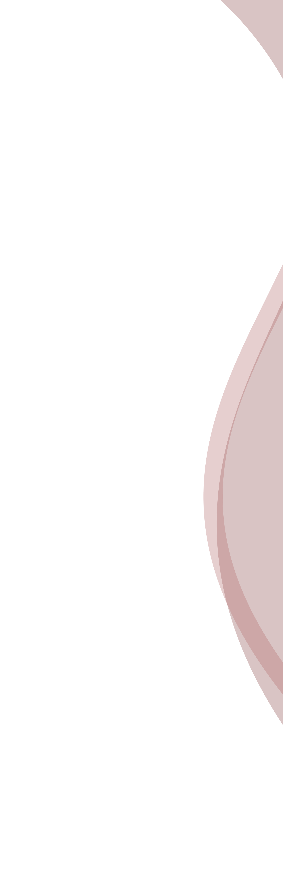

Line / Curve
A print magazine I designed, inspired by Brutalist architecture. The concept behind the magazine was to merge rigid, sharp lines with softer, more fluid elements, embodying the contrast between structure and creativity.

A print magazine I designed, inspired by Brutalist architecture. The concept behind the magazine was to merge rigid, sharp lines with softer, more fluid elements, embodying the contrast between structure and creativity.

For this project, I developed a visual identity for House Event, a group born from the underground music scene of downtown San Diego. Drawing inspiration from their electrifying live performances, I crafted designs that reflect their dynamic and raw energy. House Event is all about pulsating beats and vibrant nightlife — their aesthetic blends edgy street style with a cutting-edge, experimental flair.

Developing two hardware products — a metal mechanism with a handle that touches the forehead, and an inhaler/electronic inhalant device. These two devices are completely different but achieve the same memory-enhancing effects for their clients.

I was hired by Radeus Labs to refresh Jei’s logo. They wanted a new logo for their website and press releases.

A website I designed for Blue Bottle’s new venture of opening stores for the late-night shopper. These stores offer cookies and coffee all through the night. I used Blue Bottle’s branding and Insomnia’s cookies.

The goal of this project is to redesign the cover for “If Only I Had Told Her” by Laura Nowlin to boost its visual appeal, attract new readers, and increase sales.

Mediums is an artistic magazine that celebrates unconventional mediums and boundary-pushing creativity. Inspired by postmodern aesthetics, the concept merges vibrant visuals with experimental layouts to create a visually stimulating and thought-provoking experience.

An infographic for a sensing toothbrush that detects plaque and cavities, guards against over-brushing, and connects to your phone to help improve your brushing habits.